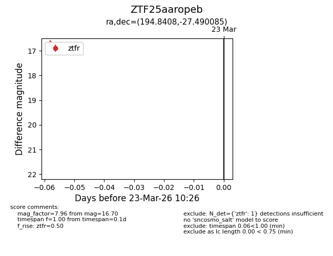
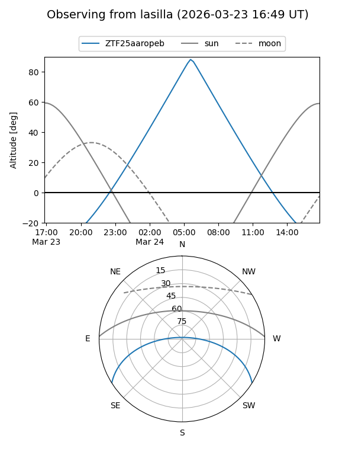
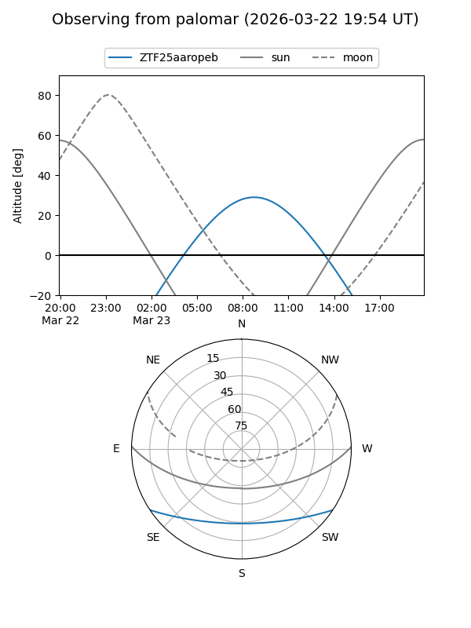

ZTF25aaropeb
Target ZTF25aaropeb at 2026-03-23 10:28
Aliases and brokers:
FINK: link
Lasair: link
ALeRCE: link
alt names
ZTF25aaropeb (ztf,fink_ztf)
Coordinates:
equatorial (ra, dec) = 194.8408,-27.49008
equatorial (HMS+DMS) = 12:59:21.79,-27:29:24.31
galactic (l, b) = (305.0869,+35.34850)
Flags:
Photometry:
last ztfr=16.70
1 ztfr detections
Lightcurve

Visibility


Additional plots